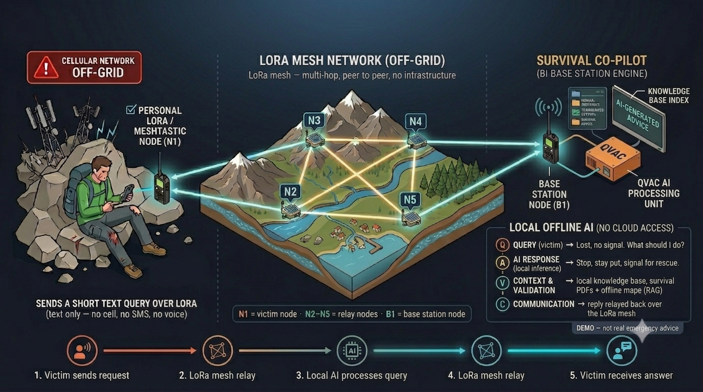

🛰️ QVAC Hackathon I · Unleash Edge AI
Survival
Co-pilot
When disaster strikes — or you're somewhere with no signal at all —
a local AI still answers life-saving questions over a
LoRa mesh. No internet, no cell, no cloud.
🛰️ NO INTERNET · NO CELL · NO CLOUD — 100% on-device
The problem
When you need help most,
there's no signal.
- When disaster strikes — or you're beyond all coverage — the first thing to fail is the network.
- Cloud AI is useless off-grid. The moment the bars hit zero, every assistant goes dark.
- The information that could save a life is exactly the information you can't reach.
The solution
Text a question over the mesh.
A local AI answers.
People on the ground carry handheld Meshtastic radios. A base station — a laptop
(soon a solar box) — runs a fully on-device LLM
and auto-answers over LoRa.
- Works with stock Meshtastic apps — nothing to install in the field.
- Replies are grounded in a verified knowledge base, not a model's guess.
- Free for everyone. No account, no paywall, no gate.
The big picture
Local AI over a LoRa mesh, end to end

Live on real hardware
A real exchange, end to end
?bitten by a snake — what now
1. Stay calm, stop moving — slow the venom spread.
2. Pressure-immobilise the limb, keep it below the heart.
3. SOS — send your location + time of bite.
↳ retrieved first_aid_snake_bite @ 0.72 · 2 segments · 227 B · DM reply
- Sent from an iPhone over LoRa — no SIM, no Wi-Fi.
- Multilingual & cross-lingual: ask in any language; it retrieves sources across languages and answers in kind.
- Round-trip in seconds, within the 200-byte LoRa budget.
📹 <demo video plays here>
Grounded & safe
It refuses rather than hallucinate
🔎 Retrieval-grounded
Every answer is built from a bilingual survival corpus, embedded with EmbeddingGemma. Cross-lingual — a Chinese query finds English sources.
🚫 Refuse on low confidence
If nothing relevant scores above 0.40, the bot says "out of scope" before the LLM ever runs — no confident wrong answers on life-critical topics.
Validated end-to-end: in-domain answers grounded, off-topic queries refused.
Why edge AI · why QVAC
It wins where the cloud can't follow
🔒
Privatedata never leaves the device
Every query & answer stays local — no cloud ever sees it. Your data stays yours.
🛡️
Resilientno central point of failure
Keeps working when towers, grid and internet are gone — the mesh has nothing to knock out.
Answers in seconds on-device — no round-trip to a datacentre you can't even reach.
💸
Low-costruns on a laptop
No cloud bills, no per-call fees — a laptop today, a solar Pi tomorrow.
Built on
Open mesh + private edge AI
QVAC SDK
"Decentralized, local AI in a single API." Every bit of inference runs through @qvac/sdk — on-device LLM + RAG / embeddings, 100% on the base station, no cloud, no central point of failure. The same SDK runs on Linux, macOS, Windows, Android & iOS.
Meshtastic + LoRa
Open-source, long-range, low-power radio mesh. Multi-hop, peer-to-peer, no infrastructure — the transport that reaches users when every tower is down.
Vision
A growing off-grid mutual-aid network
- Answers stay free for everyone — no account, no gate.
- Each base station is cheap and solar-capable — no grid, no internet needed.
- Drop more stations anywhere the network is down → wider coverage.
- Every new node extends the safety net — public-good infrastructure for the places that need it most.
Survival Co-pilot
Life-critical AI
that works anywhere.
Private. Local. Unstoppable. — Edge AI where it matters most.
QVAC SDK · on-device LLM + RAG
Meshtastic · LoRa mesh
Open-source (MIT) · all inference on @qvac/sdk · bring-your-own-hardware · zero cloud